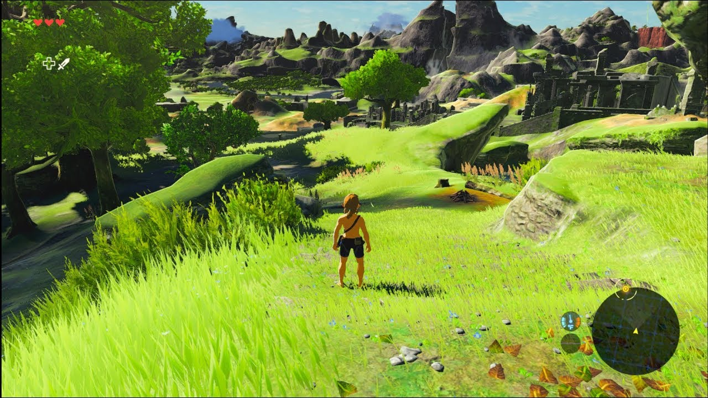
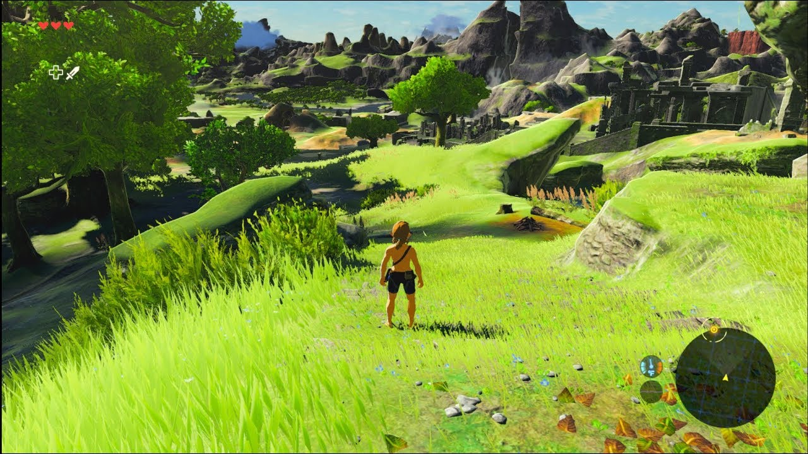

The Legend of Zelda: Breath of the Wild
Información del juego
The Legend of Zelda: Breath of the Wild es un videojuego de acción-aventura de 2017 de la serie The Legend of Zelda, desarrollado por la filial Nintendo EPD en colaboración con Monolith Soft y publicado por Nintendo para las consolas Wii U y Nintendo Switch.
Es la decimoctava entrega de la serie y la tercera en utilizar gráficos en alta definición.
El jugador controla a Link, que despierta en un mundo postapocalíptico después de estar cien años durmiendo para derrotar a Ganon y salvar al reino de Hyrule. A diferencia de los otros títulos predecesores de la serie, el juego presenta un mundo abierto que le permite al jugador encontrar distintas maneras de completar un objetivo y que la historia pueda ser completada de forma no lineal.
La idea original de la distribuidora era lanzar el juego en 2015, no obstante, en marzo de dicho año, el productor Eiji Aonuma declaró que los objetivos de la empresa habían cambiado y ya no buscaban lanzar el juego en ese año, retrasándolo para 2016. Tras unos meses sin anuncios sobre el título, Nintendo anunció su retraso hasta 2017, así como que también el juego sería presentado formalmente en la E3 2016. El juego fue presentado a través de su respectivo tráiler en la E3, siendo este el eje central de la presentación de Nintendo.
Desde la primera presentación pública, Breath of the Wild fue recibido positivamente por la crítica. Luego de su lanzamiento, el juego fue elogiado por la crítica y los fanáticos de la franquicia. Resultó ganador de tres premios en los The Game Awards 2017, incluyendo juego del año. La libertad para completar objetivos de manera no lineal e interactividad que ofrece el título lo llevaron a ser catalogado como el juego más completo de la serie, y uno de los mejores videojuegos de todos los tiempos.
Reseñas
IGN
Obra maestra
"The Legend of Zelda: Breath of the Wild es una clase magistral sobre diseño de mundo abierto y un juego decisivo que reinventa una franquicia de 30 años. Presenta una maravillosa caja de arena llena de misterio, colgando docenas y docenas de cosas tentadoras frente a ti que simplemente piden ser exploradas. He tenido muchas aventuras en Breath of the Wild, y cada una tiene una historia única detrás de lo que me llevó a ellas, lo que las convierte en historias sobre historias. E incluso después de haber pasado más de 50 horas buscando en los confines de Hyrule, todavía logro encontrar cosas que no había visto antes. Fácilmente gastaré entre 50 y 100 más tratando de localizar sus momentos fascinantes."
"10 / 10"
Metacritic
Aclamado universalmente
"Basado en 117 reviews de críticas."
"The Legend of Zelda: Breath of the Wild es un lanzamiento histórico para su franquicia y Nintendo. Es la primera vez que Nintendo realmente aborda el género de mundo abierto en el sentido de la generación actual; Sin embargo, al llegar tarde a la fiesta, adopta algunas fortalezas de los mejores juegos y al mismo tiempo forja su propia identidad. Este juego es una revolución para la franquicia, pero la esencia de Legend of Zelda sigue ahí: su alma permanece. El resultado final, entonces, es una experiencia cautivadora. Este estará en la carrera como el mejor juego en la historia de la propiedad intelectual, y probablemente será discutido como un contendiente líder en el género de mundo abierto más amplio. Nintendo ha llevado valientemente una de sus franquicias más importantes en una nueva dirección y ha logrado un triunfo."
"97 / 100"
LevelUp
"9/10"
"The Legend of Zelda: Breath of the Wild es un juego maravilloso, que superó por mucho las expectativas —que con todo y algunas dudas, ya eran muy altas— al sumergirme en una fantasía que se siente real. Cada aspecto de la experiencia de juego está bien ejecutado en términos técnicos, pero, más allá, te despierta emociones intensas, de curiosidad y angustia, a constante asombro… cada una bajo una luz positiva, que suman para envolverte y cautivarte. Esta entrega de la franquicia es por mucho uno de los mejores trabajos en la trayectoria de Nintendo, uno cuya calidad resonará por mucho tiempo."
Imágenes y capturas del juego

 
